作为程序员，选择好合适的开发社区对提高自己的编程能力会有很大的帮助，我也说不出为什么，但是一些优秀的实时开发社区确实能帮你积累不少开发经验。
下面这张图列出了14个程序员经常逛的顶级开发社区，作为程序员，你应该要了解其中一个或者最好是多个，并且学会使用它们，利用里面的资源提高自己的编程能力。
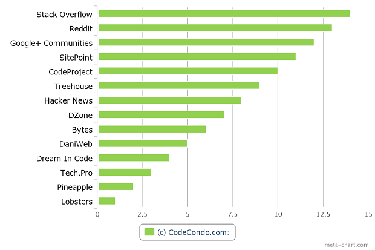
我们期望在开发者社区中获得什么？
我们希望能得到切实的帮助，而不是获取一些唠叨的废话或者一些水文。我们希望能根据自己提出的问题来获得其他开发者的回答帮助或者讨论一些学习资源的问题。下图是一些开发者在社区中最关注的一些问题。
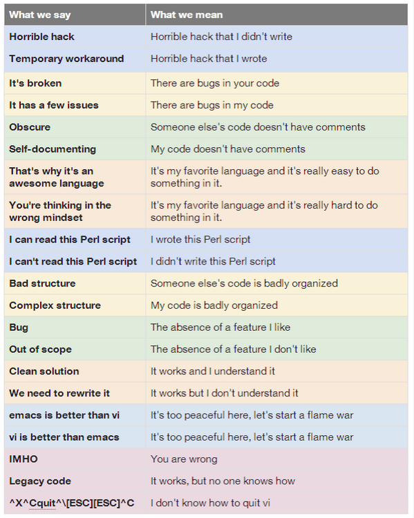
下面我们来看一下程序员经常去的14个顶级开发者社区，如果你还不知道它们，那么赶紧去看看，也许会有意想不到的收获。
9月份，Stack Overflow也将迎来其6岁的生日，毫无疑问，Stack Overflow是全球最受程序员欢迎的开发社区，而且也是内容最丰富的社区之一。
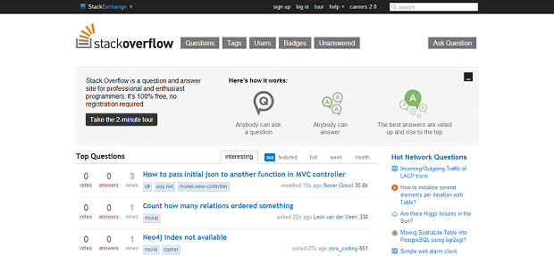
reddit也是一个非常富有个性的社区，你可以在reddit上提交一些感兴趣的话题，也可以和其他程序员讨论一些编程开发的问题和当前的IT热点资讯，reddit是一个用户粘性比较强的开放社区，编程开发板块只是其中的一小部分。
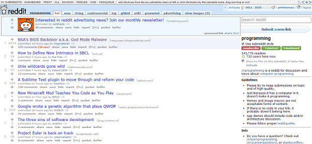
加入Google+社区只需要一个Google账户即可，你可以完全免费的获取里面的资源。
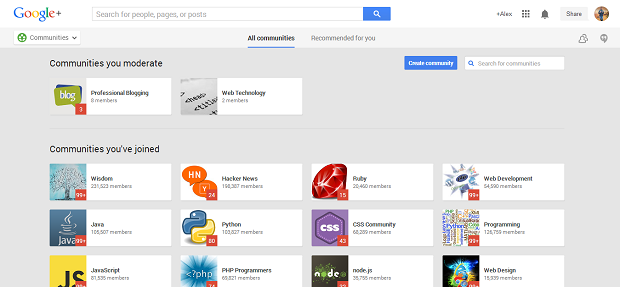
SitePoint社区论坛也是我最喜欢的在线开发社区和程序员设计师家园之一，SitePoint主要目标是帮助初学者了解其选择的编程语言和技术，并且得到相应的提高，网站内容包括web开发、web设计、技术写作以及用户体验等。
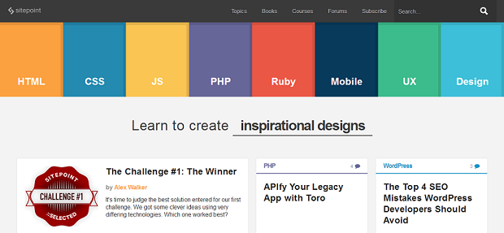
截止2013年8月，已经有100多万用户入驻codeproject，并且分享了约100多万个代码演示，在codeproject里，你可以将代码分享给你的朋友们。和其他社区不同的是，codeproject更加侧重软件开发，比如C, C#, C++, Java, Lisp等开发。
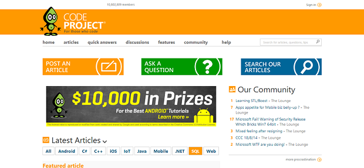
在寻找一个实惠的编程学习途径吗？你可以试试加入treehouse，它并不昂贵，年度会员还可以打折优惠。treehouse非常简单，你可以在上面找到各种等级的问题答案。
Hacker News这个名字已经刻在很多开发者心里了，在这里，可以实时看到编程界中发生的任何事情，包括一些学习的资源和教程。你可以从用户提交的数据中找到适合你的学习资源，比如文章、图像视频以及一些问题的讨论。
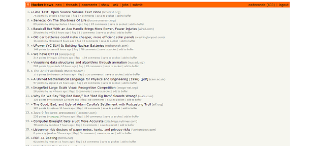
DZone是一个允许用户分享最新IT新闻和编程资源的社区，这是一个文章内容驱动的社区，所以需要许多内容管理员来把关文章的质量，从某种意义上说，它与HN和其他的编程社区类似，但是这个平台时间最长，里面的用户数量也是最多的。
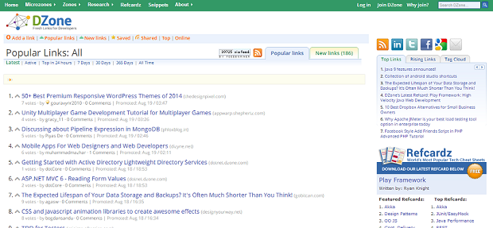
Bytes是一个传统的开发社区，新手和专家都可以在里面讨论一些关于软件开发、数据库开发以及网络和系统管理的问题。数据库、网络以及系统是编程的基础，我们需要关注这方面的问题，从而能更好的帮助我们提高编程能力。
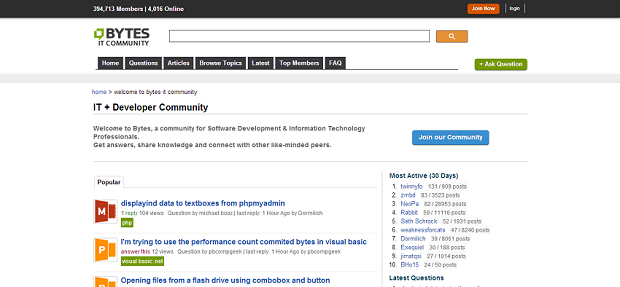
DaniWeb以前是专为市场营销业务分析人员设计的，但是现在主要为各个年龄段的Web开发者和程序员服务。
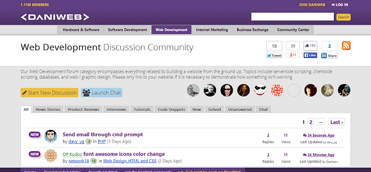
这几年，它的更新比较缓慢了，这有好的一面也有坏的一面，60w的用户以及百万及的文章，内容涵盖 Java, C++, VB.NET等，学习资源相当丰富。
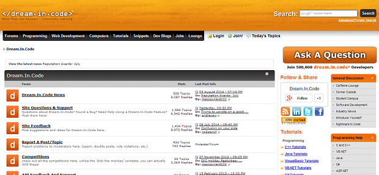
Tech.pro是一个关注科技领域发展的相关资讯的社区，Tech.pro是一个获取资源和教程的入门网站，包含一些技术教程、讨论、博客已经链接等。
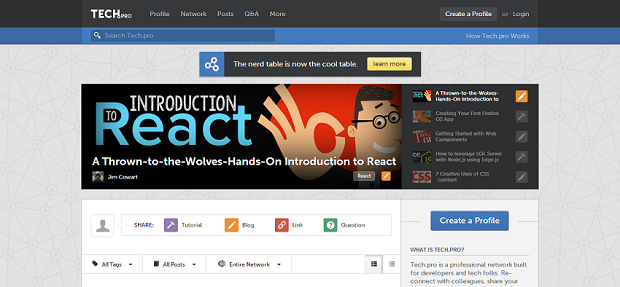
也许这还算不上活跃的优秀开发社区，但是这里也包含很多有用的工具、教程以及类库资源等。我在几个月前开始使用Pineapple，现在已经比较依赖它了。
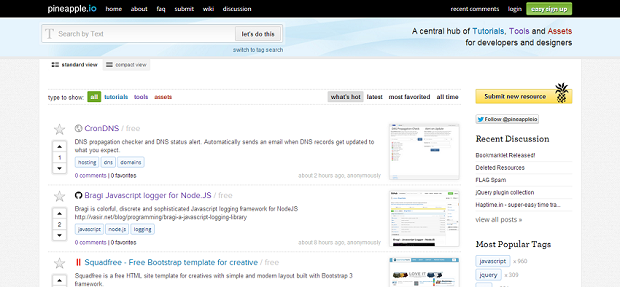
这是一个用户邀请制的开发社区，是一个真正“面向社交”的社区，你可以在里面找到大量的关于编程的任何讨论，很多信息都至少有20多条回帖，这些信息或许对你会有很大帮助。
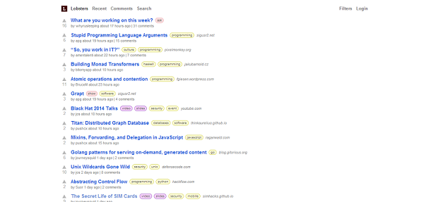